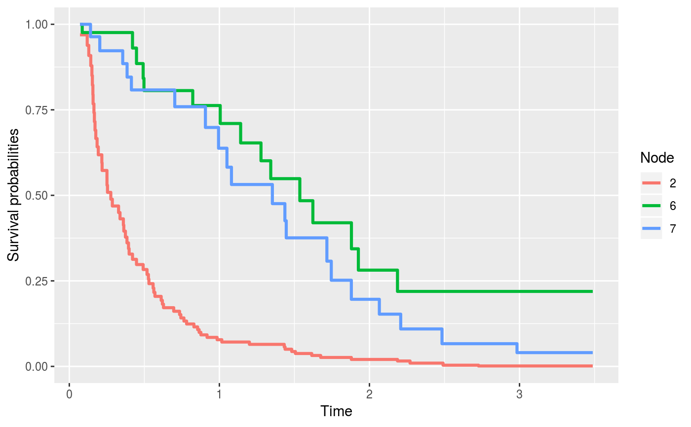
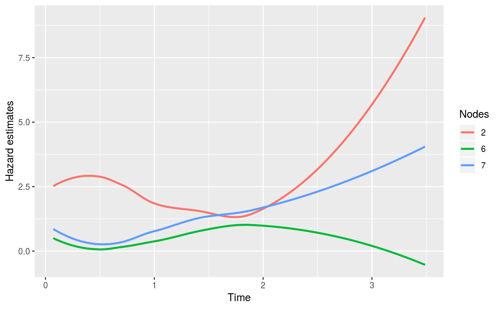

Plots an rocTree object. The function returns a dgr_graph object that is rendered in the RStudio Viewer or survival/hazard estimate at terminal nodes.
# S3 method for rocTree plot(x, output = c("graph", "visNetwork"), digits = 4, tree = 1L, rankdir = c("TB", "BT", "LR", "RL"), shape = "ellipse", nodeOnly = FALSE, savePlot = FALSE, file_name = "pic.pdf", file_type = "pdf", type = c("tree", "survival", "hazard"), ...)
| x | an object of class " |
|---|---|
| output | a string specifying the output type; graph (the default) renders the graph using the |
| digits | the number of digits to print. |
| rankdir | is a character string specifying the direction of the tree flow. The available options are top-to-bottom ("TB"), bottom-to-top ("BT"), left-to-right ("LR"), and right-to-left ("RL"); the default value is "TB". |
| shape | is a character string specifying the shape style. Some of the available options are "ellipse", "oval", "rectangle", "square", "egg", "plaintext", "diamond", and "triangle". The default value is "ellipse". |
| nodeOnly | is a logical value indicating whether to display only the node number; the default value is "TRUE". |
| savePlot | is a logical value indicating whether the plot will be saved (exported); the default value is "FALSE". |
| file_name | is a character string specifying the name of the plot when "savePlot = TRUE". The file name should include its extension. The default value is "pic.pdf" |
| file_type | is a character string specifying the type of file to be exported. Options for graph files are: "png", "pdf", "svg", and "ps". The default value is "pdf". |
| type | is an optional character string specifying the type of plots to produce. The available options are "tree" for plotting survival tree (default),
"survival" for plotting the estimated survival probabilities for the terminal nodes, and "hazard" for plotting the estimated hazard for the terminal nodes.
The |
| ... | arguments to be passed to or from other methods. |
See rocTree for creating rocTree objects.
library(rocTree) library(survival) set.seed(1) dat <- simu(100, 0, 1.3) fit <- rocTree(Surv(Time, death) ~ z1 + z2, id = id, data = dat, ensemble = FALSE) ## Plot tree plot(fit) ## Plot survival estimates at terminal nodes plot(fit, type = "survival")